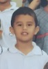
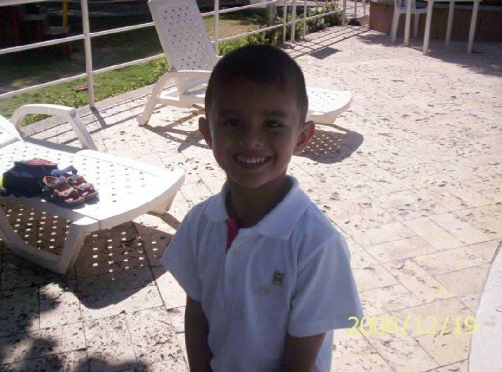
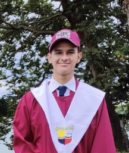

🏫 Institución: Universidad de La Sabana 🧑🏫 Docente: Juan Pablo Franco Rubio
📝 Materia: Programación de Nuevas Tecnologías 🙋♂️ Estudiante: Ricardo Andrés Cortés Coronell
Nombre Completo: Ricardo Andrés Cortés Coronell
Edad: 19 Años
Carrera: Ingeniería Informática
Fecha de Nacimiento: 21 de Noviembre de 2003
Lugar de Nacimiento: Barranquilla, Atlantico
Mis estudios de educación media iniciaron formalmente hace casi 16 años en un jardín que lleva por nombre Aspaen Ocean Kids donde cursé lo que yo conocí como Kínder 4 . Mi madre trabajaba en el colegio ya de mayores que se encontraba situado cerca al jardín donde yo estudiaba. Esta primera instancia de mi educación consta el primer contacto de aprendizaje de la columna vertebral del desarrollo del conocimiento que consta del habla, letras, inicio de lectura y conocimiento de números.
De allí empiezo con mi desarrollo de socialización con otros niños con el fin de afianzar esta característica que es vital para un profesional a futuro pero en mi caso se me complicaba relacionarme con los demás y era bastante introvertido por ello en esta etapa se tenía que ir cimentando esas bases y forjar la seguridad para socializar. De ahí un año después ingreso a un nuevo colegio de nombre Colegio San José de Barranquilla aquí pasaría la mayor parte de mi vida escolar. Cursé los dos últimos cursos del preescolar o jardín, se me fue haciendo más fácil socializar y mostraba potencial con los números además que había mayor énfasis en el deporte o actividad física en general. Ya en 2010 me terminé graduando del preescolar para entrar en la siguiente etapa de educación media.
Arranca la primaria, ya se añaden más materias con el fin de afianzar en distintas áreas del conocimiento en general. Se hizo mucho énfasis en el área de competencias ciudadanas y ciencias, allí adquiero lo necesario para conocer los fenómenos del mundo y la estructura social del mismo. Así no tuviese afinidad en todas las asignaturas, con lo que analizo es necesario ir adquiriendo así sea un conocimiento básico de muchas temáticas en general.
A partir de la primaria empecé a ganar ciertos reconocimientos académicos ya sea por buen rendimiento durante el año o en materias donde sobresalía más, esto era importante dentro de la formación ya que empieza a construirse la responsabilidad y diciplina dentro de mi persona, ser consciente que no todo está ganado, muchas veces se debe poner mucho esfuerzo y más en aquellos retos que se me dificulten más que otros. también fue en la primaria donde conocí muchísimas personas y acá la personalidad se asienta un poco más en la persona, sus actitudes, fortalezas, deficiencias y valores adquieren una relevancia mayor hacia la instancia donde se empieza a definir más el camino.
El final de mi primaria fue bastante convulsionado debido a cambio de colegio dos veces en año y medio, esto fue una experiencia de aprendizaje tanto académico como emocional en el sentido del cambio de ambiente repentino en dos ocasiones y más importante la adaptación a ambientes distintos, sobre todo la transición de calendario tipo A y B, a los cuales uno ha estado acostumbrado durante mucho tiempo, pero ¡enhorabuena! me gradué de primaria en el 2015.
Arranca la fase final de mi viaje por el colegio, el bachillerato...Que decir, todos fueron golpes y golpes, las asignaturas se tornaban cada vez más difíciles e incluso se añadieron nuevas de ellas, algunas como ramificaciones de otra en común. El bachillerato fue la más difícil pero mejor época de mi vida hasta el momento, los cambios al ver el mundo y a las personas, ahora uno se encuentra encaminado no solo a su título de graduación como bachiller académico sino por la pronta elección de su carrera universitaria, a que se dedicará, que proyección tiene a futuro, sus fortalezas y aspiraciones.
En el bachillerato al haber ya adquirido una mayor cantidad de conocimientos y con una complejidad mayor, soy consciente de que debo adquirir mayor madurez a la hora de actuar en los momentos que lo ameriten, empezar a encontrar el balance entre diversión y compromisos ya sean de cualquier tipo. Tener amigos de trascendencia y alejarse de amigos parásitos que no te aporten nada en tu futuro. El llegar a Décimo y Undécimo acentúa más la construcción de mi proyecto de vida, el ICFES, buen promedio, entrevista de universidad y aprovechar al máximo el ultimo de año hasta llegar a la que parecía lejana pero ahora es una realidad...la graduación. Todo concluye no solo el bachillerato, terminé de escribir mi capitulo en el colegio desde que decidí tomar aquella pluma y remojarla en tinta hace más de 15 años. Me gradué del colegio en el año 2021 y lo recuerdo como el final perfecto.
Tomé mi decisión de estudiar Ingeniería Informática en la Universidad de La Sabana luego de casi un año debatiéndome el lugar y carrera. A pesar de las dificultades tomé mi decisión y a pesar de la distancia debido a que no vivo acá en Chia de todas maneras se que es un sacrificio por aspirar a muy buenas oportunidades en el futuro y esforzarme por el. Al fin y al cabo estoy ante una nueva etapa de mi vida, una nueva saga de mi vida...La Universidad.